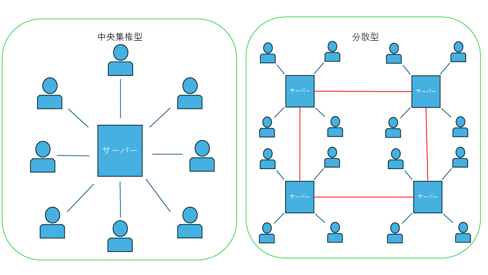

未来
これまで私たちは、SNSが現代社会に与える多様な影響について考察してきました。 情報の両義性、精神健康への影響、経済的搾取、消えない記憶の問題—しかし、これらは決して避けられない宿命ではありません。 SNSの未来は、私たち一人ひとりが作るものです。この最終章では、より良いデジタル社会への道筋を探ります。
1. 振り返り：私たちが見てきたSNSの光と影
まず、これまでの議論を振り返ってみましょう。
SNSは確かに私たちに多くの恩恵をもたらしました。遠く離れた人々との繋がり、自己表現の場、情報へのアクセス、社会運動への参加—これらはすべて、SNSが持つ本来の力です。
しかし同時に、私たちは深刻な問題も目撃してきました。フェイクニュースの蔓延、精神的健康の悪化、注意力という貴重な資源の搾取、そして忘却する権利の剥奪。これらの問題は、SNSが「利益最大化」を最優先に設計されていることから生まれています。
これらの問題が避けられない宿命ではないということです。技術は中立ではありません。それは設計者の価値観と意図を反映します。現在のSNSの問題は、ユーザーの幸福よりも株主の利益を優先する価値観の産物なのです。
2. 希望の兆し：変化は既に始まっている
しかし、変化の兆しは確実に現れています。

🔄 分散型SNSの概念図を挿入推奨（中央集権型 vs 分散型のネットワーク構造比較図）
3. 私たちの力：個人の選択が作る未来
では、私たち個人にはどのような力があるのでしょうか。
4. 理想的なSNSの姿
では、私たちが目指すべきSNSとはどのようなものでしょうか。
 🎯 理想的なSNSエコシステムの概念図を挿入推奨
🎯 理想的なSNSエコシステムの概念図を挿入推奨（ユーザー中心の設計、透明性、プライバシー保護、多様性の尊重を視覚化）
5. 今日からできること：私たちの行動指針
この理想に向けて、私たち一人ひとりが今日からできることは何でしょうか。
利用時間の管理：スマートフォンの「スクリーンタイム」機能で利用状況を確認し、1日の上限を設定する
情報源の厳選：フォローするアカウントを見直し、質の高い情報を発信する信頼できる源を選ぶ
デジタル・デトックス：週に1日、または1日の特定の時間帯をSNSから離れる時間として設定する
批判的評価：情報を受け取ったら、すぐに共有せず、出典と内容の真偽を確認する習慣をつける
6. 教育の重要性：次世代への責任
私たち高校生世代には、次の世代に健全なデジタル社会を引き継ぐ責任があります。
学校教育での取り組み
学校では、単なる技術操作ではなく、デジタル・シチズンシップ（デジタル市民権）教育を充実させる必要があります。これには以下が含まれます：
- 情報リテラシー：情報の真偽を見極める力の育成
- プライバシー教育：個人情報保護とセキュリティの知識
- コミュニケーション：オンライン上での適切なマナーと対話力
- ウェルビーイング：デジタル・ウェルビーイングの維持方法
家庭での対話
家族との対話も重要です。親世代にもSNSの光と影について説明し、世代を越えた理解を深めることで、より健全なデジタル環境を作ることができます。
7. 技術的解決策への期待と参画
私たち若い世代は、技術的解決策の開発にも積極的に関わることができます。
オープンソース・プロジェクトへの参加
プログラミングスキルがある人は、MastodonなどのオープンソースSNSプロジェクトに貢献することで、直接的に未来のSNSを作ることができます。
技術的なスキルがない人でも、ユーザビリティのテスト、翻訳作業、ドキュメント作成など、様々な形で貢献できます。
新しいアイデアの提案
若い世代の視点から、既存のSNSの問題点を指摘し、解決策を提案することも重要です。企業のフィードバックシステムを活用し、より良いサービスの実現を求めていきましょう。
 💻 オープンソースコミュニティのイラストを挿入推奨
💻 オープンソースコミュニティのイラストを挿入推奨（協働で開発する人々、GitHubなどのプラットフォーム、コントリビューションの流れ）
8. 私たちが作る未来：希望から行動へ
この長い議論を通じて明らかになったのは、SNSの未来は決して他人任せにできないということです。私たち一人ひとりが、その未来を作る重要な主人公なのです。
確かに、巨大なプラットフォーム企業や政府の力は大きく、個人の力は小さく見えるかもしれません。しかし、歴史を振り返れば、大きな社会変革はいつも個人の小さな行動から始まっています。
環境問題への取り組み、人権運動、民主化運動—これらすべてが、個人の意識変革と行動から始まりました。SNSの問題も同じです。私たち一人ひとりが問題を理解し、意識的に行動することで、必ず変化を起こすことができます。
私たちは、SNSの最初の世代です。この技術と共に成長し、その問題も恩恵も直接体験してきました。だからこそ、私たちには次の世代により良いデジタル環境を残す責任があります。
しかし、それらを理解した私たちこそが、解決策を見つけ、実行する力を持っているのです。
希望を持ち、行動を起こし、未来を切り拓いていきましょう。
終わりに：デジタル社会の責任ある市民として
SNSは、人類史上初めて個人が世界規模で情報を発信できる技術です。この革命的な技術を、私たちはどのように使っていくべきでしょうか。
答えは明確です。私たちは、この技術を人間の幸福と社会の発展のために使わなければなりません。利益の追求や注意力の奪い合いのためではなく、真の繋がりと理解を深めるために。
そのためには、私たち一人ひとりが責任ある市民として行動する必要があります。情報を批判的に評価し、他者を尊重し、建設的な議論を重ね、次世代の幸福を考える—これらすべてが、より良いデジタル社会を作るための行動です。
SNSの未来は、私たちが作ります。その未来が明るいものになるかどうかは、私たち一人ひとりの選択と行動にかかっています。今日から、この瞬間から、より良いデジタル社会の実現に向けて、共に歩んでいきましょう。
人々が真に繋がり、理解し合い、共に成長していける社会—それこそがSNSの真の可能性です。私たち一人ひとりができることから始めていくのです。
参考文献
Mastodon. (2023). About Mastodon. Retrieved from https://joinmastodon.org/
W3C Social Web Working Group. (2018). ActivityPub is now a W3C Recommendation. W3C News.
European Commission. (2022). The EU's Digital Services Act. Retrieved from https://commission.europa.eu/strategy-and-policy/priorities-2019-2024/europe-fit-digital-age/digital-services-act_en
EUR-Lex. (2022). Regulation (EU) 2022/2065 of the European Parliament and of the Council on a Single Market For Digital Services (Digital Services Act).
ActivityPub Rocks! (2023). About ActivityPub. Retrieved from https://activitypub.rocks/